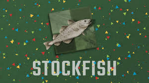

Where to Start Playing
Chess may sound complex and difficult to learn for many people. While it is indeed a complex game to which one can devote a lifetime, start learning it only takes a chess set and a calm mind. Here're a few tips if you are new to chess.

First and most importantly, buy a chess set! While you can get lichess and chess.com on a smartphone or laptop, playing chess online does not makes the experience of playing chess whole. Even though they are still strongly recommended when trying to learn chess and analyze previous games, playng chess over a real board differs greatly from playing online. While online chess removes most physical restrictions of playing chess, it often encourages a rushed game style where both sides race to not blunder first. On the other hand, playing chess on a real board calms people down with the feeling of touching pieces and sitting down to really calculate moves. Therefore, getting a chess set can really help you access the feeling of time zooming past while you emerge yourselves in a game.

Further, try playing with people around you. An indispensible part of chess's charm comes from building bridges between people. To do this, you can join a local chess club, check out chess stands in night markets, or simply ask a person you see playing chess to have a game. You'll be surprised about how quickly chess can bring different people together and how enjoyable that process is.

Last but not least, use the Internet! With a smartphone and a laptop, you can access chess content and top engines that were not available to players 20 years ago. Analyze your games with an online engine works faster and better than sitting down for hours trying to analyze the game without it. Subscribe to chess streamers and following top competitions can also bring new ideas of chess. I will go more in depth of that in the "Common Tips" section.
